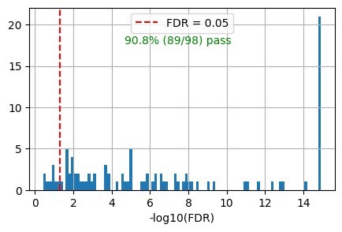
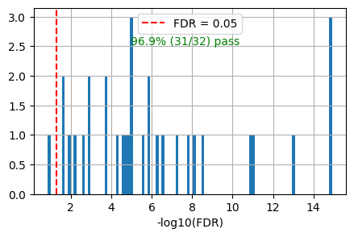

pi3ks=['PIK3CA','PIK3CB','PIK3CD','PIK3CG','PIK3R1','PIK3R2','PIK3R3','PTEN','AKT1','AKT2','AKT3','MTOR','RICTOR','RPTOR','TSC1','TSC2','PDK1','IRS1','IRS2','INSR','IGF1R','GAB1','HRAS','NRAS','KRAS','EGFR','ERBB2','ERBB3','ERBB4']Pathway analysis
Overview
Reactome Pathway Enrichment
get_reactome_raw(gene_list) — Performs Reactome pathway analysis on a gene set and returns the complete raw output as a DataFrame. Includes all pathway metadata (IDs, names, p-values, entity counts, reaction ratios).
get_reactome(gene_list, p_type) — Wrapper around get_reactome_raw that returns a cleaned DataFrame with pathway names, Reactome IDs, p-values (or FDR), and -log10 transformed values.
path = get_reactome(
gene_list=pi3ks, # list of gene symbols to analyze
p_type='FDR', # 'FDR' or 'p' for raw p-value
)Reference Database Queries
query_reactome(uniprot_id) — Queries a UniProt ID against the Reactome pathway database. Returns all pathways (at any hierarchy level) that the protein participates in, with a lowest flag indicating leaf-level pathways.
add_reactome_ref(df, uniprot) — Augments a pathway analysis DataFrame with reference columns indicating whether each pathway is annotated for a specific protein. Also appends any missing pathways from the reference (with p=1.0).
out = add_reactome_ref(
df=path, # output DataFrame from get_reactome()
uniprot='P31749', # UniProt ID of kinase to check against
)
# Adds columns: ref_path (1/0), ref_path_lowest (1/0)Visualization
plot_path(react_df, ...) — Creates a horizontal bar plot of top enriched pathways. Optionally highlights bars in dark red for pathways matching a reference set.
plot_path(
react_df=out, # pathway DataFrame with -log10 p-values
p_type='FDR', # 'FDR' or 'p' - which p-value column to plot
ref_col='ref_path', # column name (1/0) to highlight matching bars
ref_id_list=None, # alternative: list of reactome_ids to highlight
top_n=15, # number of top pathways to display
max_label_length=80, # truncate pathway names longer than this
)Overlap Statistics
get_overlap(react_df, ...) — Calculates what fraction of reference pathways pass a significance threshold. Optionally plots a histogram of -log10(p) values with a threshold line.
accuracy = get_overlap(
react_df=out, # pathway DataFrame from add_reactome_ref()
ref_col='ref_path_lowest', # column name (1/0) indicating reference pathways
ref_id_list=None, # alternative: list of reactome_ids
p_type='FDR', # 'FDR' or 'p'
thr=0.05, # significance threshold (before log transform)
plot=True, # whether to show histogram
figsize=(5, 3), # figure size tuple
)
# Returns: float (fraction passing threshold, e.g., 0.97)Complete Pipeline Example
# 1. Run pathway enrichment on gene set
out = get_reactome(
gene_list=pi3ks, # list of gene symbols
p_type='FDR', # use FDR-corrected p-values
)
# 2. Add reference annotations for a specific kinase
out = add_reactome_ref(
df=out, # enrichment results
uniprot='P31749', # AKT1 UniProt ID
)
# 3. Visualize top pathways with reference highlighting
plot_path(
react_df=out, # augmented DataFrame
p_type='FDR', # plot -log10(FDR)
ref_col='ref_path_lowest', # highlight lowest-level reference pathways
top_n=15, # show top 15
)
# 4. Calculate overlap accuracy
accuracy = get_overlap(
react_df=out, # augmented DataFrame
ref_col='ref_path_lowest', # evaluate against lowest-level pathways
thr=0.05, # FDR < 0.05 significance cutoff
plot=True, # show histogram
)Setup
Reactome pathway
get_reactome_raw
def get_reactome_raw(
gene_list
):
Reactome pathway analysis for a given gene set; returns raw output in dataframe.
raw_out = get_reactome_raw(pi3ks)
raw_out.head()| stId | dbId | name | llp | inDisease | species.dbId | species.taxId | species.name | entities.resource | entities.total | entities.found | entities.ratio | entities.pValue | entities.fdr | entities.exp | reactions.resource | reactions.total | reactions.found | reactions.ratio | |
|---|---|---|---|---|---|---|---|---|---|---|---|---|---|---|---|---|---|---|---|
| 0 | R-HSA-1963640 | 1963640 | GRB2 events in ERBB2 signaling | True | False | 48887 | 9606 | Homo sapiens | TOTAL | 21 | 9 | 0.001301 | 1.110223e-16 | 1.221245e-15 | [] | TOTAL | 4 | 4 | 0.000252 |
| 1 | R-HSA-9665348 | 9665348 | Signaling by ERBB2 ECD mutants | True | True | 48887 | 9606 | Homo sapiens | TOTAL | 23 | 9 | 0.001425 | 1.110223e-16 | 1.221245e-15 | [] | TOTAL | 15 | 15 | 0.000945 |
| 2 | R-HSA-9664565 | 9664565 | Signaling by ERBB2 KD Mutants | True | True | 48887 | 9606 | Homo sapiens | TOTAL | 35 | 13 | 0.002168 | 1.110223e-16 | 1.221245e-15 | [] | TOTAL | 17 | 17 | 0.001071 |
| 3 | R-HSA-1227990 | 1227990 | Signaling by ERBB2 in Cancer | False | True | 48887 | 9606 | Homo sapiens | TOTAL | 36 | 13 | 0.002230 | 1.110223e-16 | 1.221245e-15 | [] | TOTAL | 62 | 62 | 0.003907 |
| 4 | R-HSA-9665686 | 9665686 | Signaling by ERBB2 TMD/JMD mutants | True | True | 48887 | 9606 | Homo sapiens | TOTAL | 30 | 10 | 0.001858 | 1.110223e-16 | 1.221245e-15 | [] | TOTAL | 13 | 13 | 0.000819 |
get_reactome
def get_reactome(
gene_list, p_type:str='FDR', # or p
):
Reactome pathway analysis for a given gene set; returns formated output in dataframe with additional -log10(p)
path = get_reactome(pi3ks,p_type='p')
path.head()Running pathway analysis
Done| name | reactome_id | p | -log10_p | |
|---|---|---|---|---|
| 0 | GRB2 events in ERBB2 signaling | R-HSA-1963640 | 1.110223e-16 | 15.955 |
| 1 | Signaling by ERBB2 ECD mutants | R-HSA-9665348 | 1.110223e-16 | 15.955 |
| 2 | Signaling by ERBB2 KD Mutants | R-HSA-9664565 | 1.110223e-16 | 15.955 |
| 3 | Signaling by ERBB2 in Cancer | R-HSA-1227990 | 1.110223e-16 | 15.955 |
| 4 | Signaling by ERBB2 TMD/JMD mutants | R-HSA-9665686 | 1.110223e-16 | 15.955 |
path = get_reactome(pi3ks,p_type='FDR')
path.head()Running pathway analysis
Done| name | reactome_id | FDR | -log10_FDR | |
|---|---|---|---|---|
| 0 | GRB2 events in ERBB2 signaling | R-HSA-1963640 | 1.221245e-15 | 14.913 |
| 1 | Signaling by ERBB2 ECD mutants | R-HSA-9665348 | 1.221245e-15 | 14.913 |
| 2 | Signaling by ERBB2 KD Mutants | R-HSA-9664565 | 1.221245e-15 | 14.913 |
| 3 | Signaling by ERBB2 in Cancer | R-HSA-1227990 | 1.221245e-15 | 14.913 |
| 4 | Signaling by ERBB2 TMD/JMD mutants | R-HSA-9665686 | 1.221245e-15 | 14.913 |
path[path.FDR<0.05]| name | reactome_id | FDR | -log10_FDR | |
|---|---|---|---|---|
| 0 | GRB2 events in ERBB2 signaling | R-HSA-1963640 | 1.221245e-15 | 14.913 |
| 1 | Signaling by ERBB2 ECD mutants | R-HSA-9665348 | 1.221245e-15 | 14.913 |
| 2 | Signaling by ERBB2 KD Mutants | R-HSA-9664565 | 1.221245e-15 | 14.913 |
| 3 | Signaling by ERBB2 in Cancer | R-HSA-1227990 | 1.221245e-15 | 14.913 |
| 4 | Signaling by ERBB2 TMD/JMD mutants | R-HSA-9665686 | 1.221245e-15 | 14.913 |
| ... | ... | ... | ... | ... |
| 324 | Signaling by Rho GTPases | R-HSA-194315 | 4.264432e-02 | 1.370 |
| 325 | RUNX3 regulates p14-ARF | R-HSA-8951936 | 4.269110e-02 | 1.370 |
| 326 | Cellular response to chemical stress | R-HSA-9711123 | 4.373732e-02 | 1.359 |
| 327 | Signaling by Rho GTPases, Miro GTPases and RHO... | R-HSA-9716542 | 4.619382e-02 | 1.335 |
| 328 | Metabolism of lipids | R-HSA-556833 | 4.924793e-02 | 1.308 |
329 rows × 4 columns
Reference
Download from Reactome/Download_data: https://reactome.org/download-data
Download UniProt to All pathways under Identifier mapping files
for type, there are IEA (Inferred from Electronic Annotation) and TAS (Traceable Author Statement, higher confidence)
ref = Data.get_reactome_pathway()ref.head()| uniprot | reactome_id | pathway | type | species | |
|---|---|---|---|---|---|
| 0 | A0A023GPK8 | R-DME-1500931 | Cell-Cell communication | IEA | Drosophila melanogaster |
| 1 | A0A023GPK8 | R-DME-373753 | Nephrin family interactions | IEA | Drosophila melanogaster |
| 2 | A0A023GRW3 | R-DME-72163 | mRNA Splicing - Major Pathway | IEA | Drosophila melanogaster |
| 3 | A0A023GRW3 | R-DME-72172 | mRNA Splicing | IEA | Drosophila melanogaster |
| 4 | A0A023GRW3 | R-DME-72203 | Processing of Capped Intron-Containing Pre-mRNA | IEA | Drosophila melanogaster |
query_reactome
def query_reactome(
uniprot_id
):
Query uniprot ID in Reactome all level pathway database.
uniprot='P31751' # AKT2
akt_path = query_reactome(uniprot) # AKT2akt_path| reactome_id | uniprot | pathway | type | species | lowest | |
|---|---|---|---|---|---|---|
| 0 | R-HSA-109581 | P31751 | Apoptosis | IEA | Homo sapiens | 0 |
| 1 | R-HSA-109606 | P31751 | Intrinsic Pathway for Apoptosis | IEA | Homo sapiens | 0 |
| 2 | R-HSA-109703 | P31751 | PKB-mediated events | IEA | Homo sapiens | 0 |
| 3 | R-HSA-109704 | P31751 | PI3K Cascade | IEA, TAS | Homo sapiens | 0 |
| 4 | R-HSA-111447 | P31751 | Activation of BAD and translocation to mitocho... | IEA | Homo sapiens | 1 |
| ... | ... | ... | ... | ... | ... | ... |
| 93 | R-HSA-9755511 | P31751 | KEAP1-NFE2L2 pathway | TAS | Homo sapiens | 1 |
| 94 | R-HSA-9755779 | P31751 | SARS-CoV-2 targets host intracellular signalli... | TAS | Homo sapiens | 1 |
| 95 | R-HSA-9824446 | P31751 | Viral Infection Pathways | TAS | Homo sapiens | 0 |
| 96 | R-HSA-9824585 | P31751 | Regulation of MITF-M-dependent genes involved ... | IEA | Homo sapiens | 1 |
| 97 | R-HSA-9856651 | P31751 | MITF-M-dependent gene expression | IEA | Homo sapiens | 0 |
98 rows × 6 columns
# lowest
akt_path[akt_path.lowest==1].shape(32, 6)add_reactome_ref
def add_reactome_ref(
df, uniprot
):
out = add_reactome_ref(path,uniprot)
out.shape(406, 6)Bar plot of pathways
plot_path
def plot_path(
react_df, # the output df of get_reactome
p_type:str='FDR', ref_id_list:NoneType=None, # list of reactome_id
ref_col:NoneType=None, # column in reac_df, 1 or 0 to indicate whether it's in ref
top_n:int=10, max_label_length:int=80
):
Plot the output of get_reactome. If ref_df is provided, bars corresponding to pathways in ref_df are shown in dark red.
plot_path(out)
plt.title('PI3K Pathways');
# All level
plot_path(out,p_type='FDR',ref_id_list=akt_path.reactome_id,top_n=15)
plt.title('PI3K Pathways (with highlight as overlap with all level Reactome database)');
out.head()| name | reactome_id | FDR | -log10_FDR | ref_path | ref_path_lowest | |
|---|---|---|---|---|---|---|
| 0 | GRB2 events in ERBB2 signaling | R-HSA-1963640 | 1.221245e-15 | 14.913 | 0 | 0 |
| 1 | Signaling by ERBB2 ECD mutants | R-HSA-9665348 | 1.221245e-15 | 14.913 | 0 | 0 |
| 2 | Signaling by ERBB2 KD Mutants | R-HSA-9664565 | 1.221245e-15 | 14.913 | 0 | 0 |
| 3 | Signaling by ERBB2 in Cancer | R-HSA-1227990 | 1.221245e-15 | 14.913 | 0 | 0 |
| 4 | Signaling by ERBB2 TMD/JMD mutants | R-HSA-9665686 | 1.221245e-15 | 14.913 | 0 | 0 |
# All level, use ref_col
plot_path(out,p_type='FDR',ref_col='ref_path',top_n=15)
plt.title('PI3K Pathways (with highlight as overlap with all level Reactome database)');
# All level
plot_path(out,p_type='FDR',ref_col='ref_path_lowest',top_n=15)
plt.title('PI3K Pathways (with highlight as overlap with lowest level Reactome database)');
Overlap
get_overlap
def get_overlap(
react_df, ref_id_list:NoneType=None,
ref_col:NoneType=None, # column in react_df, 1 or 0 to indicate whether it's in ref
p_type:str='FDR', thr:float=0.05, # original threshold of p value, will be log10 transformed
plot:bool=True, figsize:tuple=(5, 3), kwargs:VAR_KEYWORD
):
get_overlap(out, ref_id_list=akt_path.reactome_id,plot=True)0.9081632653061225
get_overlap(out, ref_col='ref_path')0.9081632653061225
get_overlap(out, ref_col='ref_path_lowest')0.96875
Pipeline
out = get_reactome(pi3ks,p_type='FDR')
out = add_reactome_ref(out,'P31749') # kinase uniprot
accuracy = get_overlap(out, ref_col='ref_path',plot=True) # if lowest, change all to lo